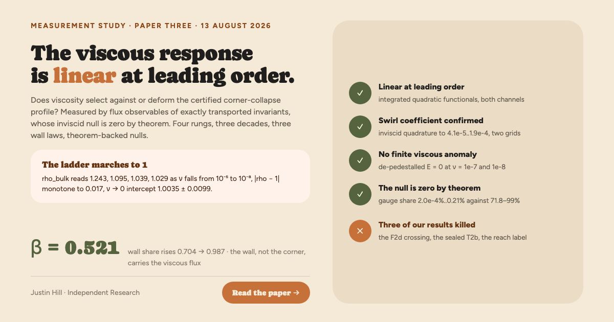

The viscous response is linear at leading order
A rho ladder marching to 1. Three wall laws. A null that is zero by theorem.
Justin Hill, Independent Research. Paper three, following the timing study: does viscosity select against or deform the certified corner-collapse profile (α = −0.34240 ± 3×10−5), and is the vanishing remainder linear response? Measured by flux observables of exactly transported invariants, adopted after the campaign's own gauge-deflated statistic was caught deleting its own prediction. Every spec frozen before the data it judges existed; the final ladder survived three adversarial review lenses with 63.93 GB of run data re-hashed clean.
The verdict statistic is rho_bulk, the measured bulk enstrophy flux against the linear-response prediction, at matched collapse depth. If the response is linear at leading order, the ratio must march to 1 as ν falls. It does:
| ν | rho_bulk (Simpson) | trapezoid control | wall share swall |
|---|---|---|---|
| 10−5 | 1.243 | 1.242 ± 0.005 | 0.704 |
| 10−6 | 1.095 | 1.094 ± 0.087 | 0.882 |
| 10−7 | 1.039 | 1.036 ± 0.11 | 0.959 |
| 10−8 | 1.029 | 1.017 ± 0.2 | 0.987 |
The joint license
Two channels, two independent instruments. In the swirl channel, the explicit inviscid quadrature reproduces the measured ν → 0 leading coefficient to between 4.1×10−5 and 1.9×10−4 relative, on two grids. In the enstrophy channel, the ladder above marches to 1. The licensed sentence was pre-committed in the frozen spec before either verdict existed:
The license, quoted tightly and no wider: linear response at the level of integrated quadratic functionals, leading coefficient only, with sub-leading corrections vanishing no slower than ν0.4. The pointwise question remains open. The reach, stated honestly: primary [10−7, 10−5], with the 10−8 rung decided by the trapezoid control in class agreement.
Three wall laws
Every apparent viscous anomaly in this collapse resolved into the same object: a free-slip wall layer, measured three independent ways. Before reading any viscous magnitude on this geometry, check the wall share first.
In a self-similar collapse, any statistic that quotients out the collapse frame can delete its own prediction, because the frame is the mechanism. The campaign's gauge-deflated statistic retained only 0.96 to 28.2% of the very response it predicted, with variance inflation factors of 10 to 170, and that deletion manufactured every downstream symptom the campaign had been chasing.
The repair is ontological, not statistical: measure fluxes of material invariants, whose inviscid null is zero by theorem, leaving nothing to deflate. Measured gauge share of the flux observables: 2.0×10−4% to 0.21%, against 71.8 to 99% deleted by the statistic they replace. That contrast, not any single physics number, is the paper's deepest contribution.
What died on the way
Three of our own results were retracted en route, in the main text, named. Seven instrument artifacts were caught and catalogued during the campaign, each an instrument reporting itself, and a seven-item corrections ledger sits in the body of the paper, not an appendix.
The discipline behind the page: every spec frozen with numeric bars before its data existed, VOID beats shaky, rules applied once. Zero of three adversarial reviewers refuted the final ladder, every headline number was independently reproduced, and 63.93 GB of run data re-hashed with zero mismatches. The series opened the same way: the July note's converged profile was an artifact, and one free residual caught it.
Still open
The pointwise question. Everything here is an integrated statement; T2, the pointwise mechanism question, remains open at every viscosity, and the paper explains why a frame-quotiented pointwise instrument is structurally blind on this collapse. The sub-leading exponent is fitted, not resolved: q = 0.425 to 0.438 against a frozen band edge at 0.4, a band edge, not a measurement.
The no-slip comparison is now in progress; the paper touched no-slip walls only through the wall-swap probe, as a boundary-condition control. R2, azimuthal stability, is parked, with the certified Tier-0 route sketched in the paper. Nothing here claims anything about generic Navier-Stokes blowup, and nothing is claimed pointwise, at any viscosity.
Tool disclosure: this work is AI-assisted, and the paper says exactly how: which parts the author can defend at expert level, which are machine-derived and awaiting expert review, and where responsibility lies. See the disclosure section in the PDF, written to the Leiden Declaration's recommendations.
The image social platforms show for this page. 1200×630.
{kind=link}
